Terraform / HCP
HCP Terraform
OrganizationとWorkspaceを作成し、Terraform CLIからHCP Terraformへ接続してStateを移行する手順、GitHubとのVCS連携、Remote実行のAWS認証情報、Runの承認、アバター変更を整理する
HCP Terraformの構成
HCP TerraformではOrganizationの配下にProjectとWorkspaceを作成する。WorkspaceはTerraform構成、State、実行履歴、変数、実行モードを管理する単位である。CLI-driven workflowでは、ローカルのTerraform CLIとWorkspaceをcloudブロックで関連付ける
| 構成要素 | 役割 |
|---|---|
| Organization | Project、Workspace、ユーザー、設定をまとめる最上位の管理単位 |
| Project | 複数のWorkspaceを用途や環境で分類する単位。初回検証ではDefault Projectを利用できる |
| Workspace | State、Variable、Run、実行モード、Terraformバージョンを管理する単位 |
| User token | Terraform CLIをHCP Terraformのユーザーとして認証するトークン |
cloudブロック | Root ModuleとOrganization／Workspaceを関連付ける設定 |
HCP Terraformのユーザートークン、AWSアクセスキー、シークレットアクセスキーはパスワードと同様に扱う。ターミナルログ、スクリーンショット、Git、チャットへ値を掲載しない。露出した場合は値を伏字にするだけでなく、元のトークンやアクセスキーを失効して再発行する
OrganizationとWorkspaceの作成
- HCP Terraformへログインし、Organizations画面でCreate organizationを選択
- 個人検証の場合はPersonalを選択
- 一意のOrganization名と通知先メールアドレスを入力してOrganizationを作成
- Organizationを開き、Workspacesから新しいWorkspaceを作成
- CLI-driven workflowを選択し、Workspace名を入力
- 初回検証ではDefault Projectへ配置
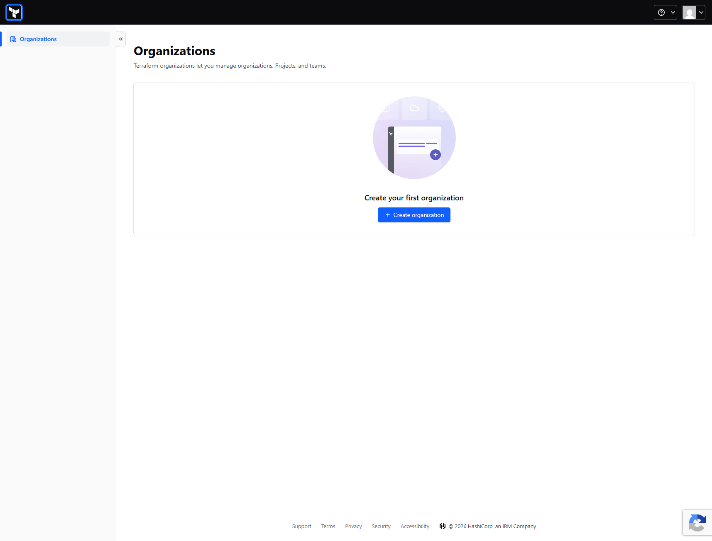
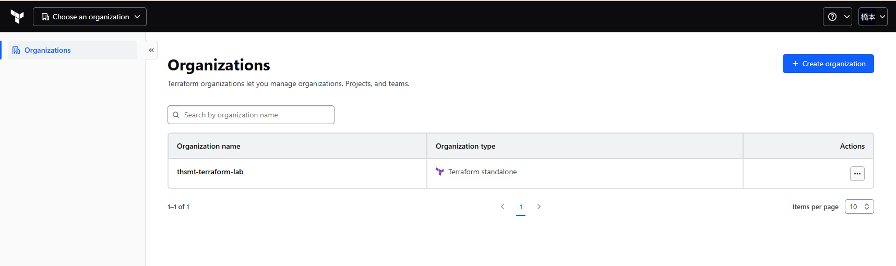
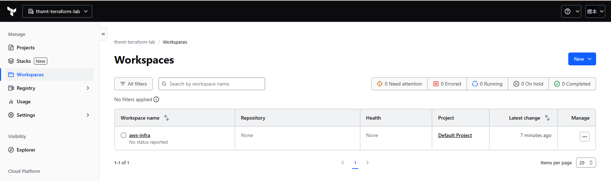
PersonalとBusinessの違い
PersonalとBusinessはWorkspaceの実行モードではなく、HCP Organizationを作成するときに選択するOrganization typeである。WorkspaceのRemote／Local／Agentとは別の設定であり、作成後にOrganization typeは変更できない
| 比較項目 | Personal | Business |
|---|---|---|
| 想定用途 | 企業や団体に属さない個人プロジェクト、個人検証 | 企業、学校、団体での利用。検証目的でも組織に属する場合はこちらを選択 |
| 所有主体 | 個人を主体としてOrganizationを管理する | Organizationを事業体へ結び付け、担当者の変更後も組織として継続管理する |
| 請求・税務情報 | 個人利用として登録する | 企業・団体の所在地などを基に、事業利用の請求と税務情報を扱う |
| Workspaceの基本機能 | Organization typeだけでは決まらない。Remote State、Remote Run、VCS連携などの利用可否や上限は、HCP TerraformのFree／有料プラン、ユーザー権限、Organization設定によって決まる | |
個人検証用のOrganizationであるためPersonalで問題ない。企業の業務環境を管理する場合や、個人ではなく会社・団体へ所有権と請求を結び付ける場合はBusinessを選択する
| 入力項目 | 指定例 | 注意点 |
|---|---|---|
| Organization type | Personal | 個人用途の検証に使用する。作成後は種類を変更できない |
| Organization name | <HCP_ORGANIZATION_NAME> | HCP Terraform全体で一意の名前にする |
| Workspace name | <HCP_WORKSPACE_NAME> | cloudブロックの名前と一致させる |
| Terraform version | CLIと同じ系列 | Remote実行ではWorkspace側のTerraformバージョンが使用される |
Terraform CLIからログイン
terraform loginを実行すると、HCP TerraformのToken作成画面がブラウザーで開く。ユーザートークンには識別しやすい説明と必要な有効期限を指定し、生成直後に一度だけ表示される値をTerraform CLIの入力欄へ貼り付ける
terraform loginterraform loginの確認でyesを入力- HCP TerraformのTokens画面でCreate an API tokenを選択
- DescriptionとExpirationを指定してトークンを生成
- 生成されたトークンをコピーし、ターミナルのToken for app.terraform.ioへ貼り付け
- Welcome to HCP Terraform!の表示を確認
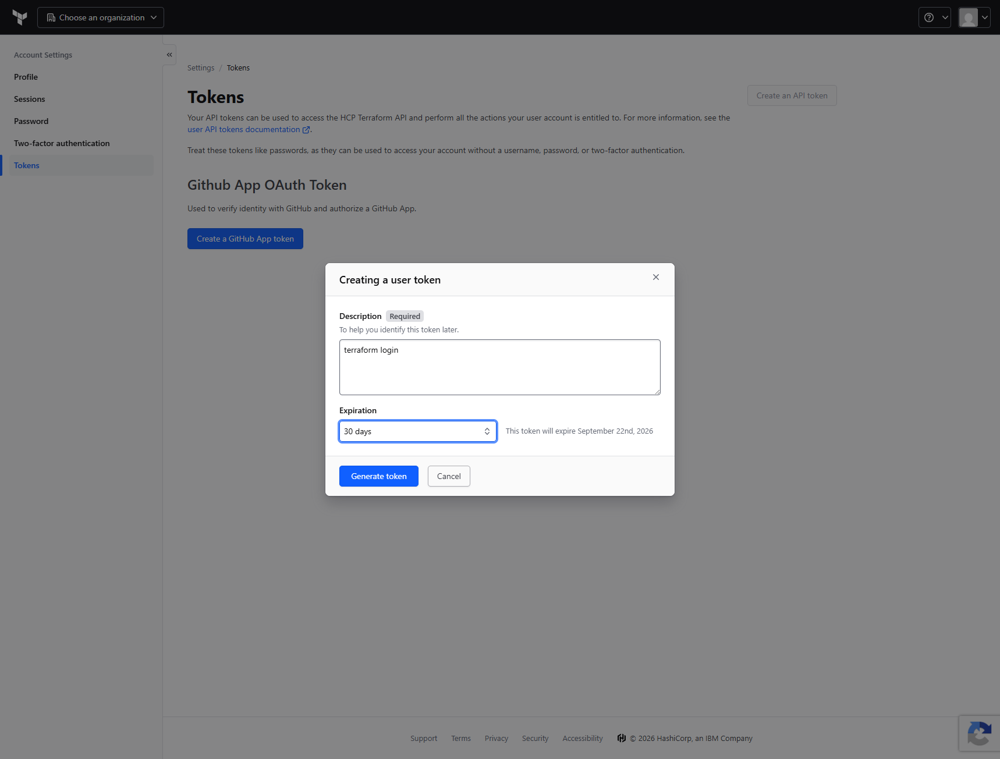
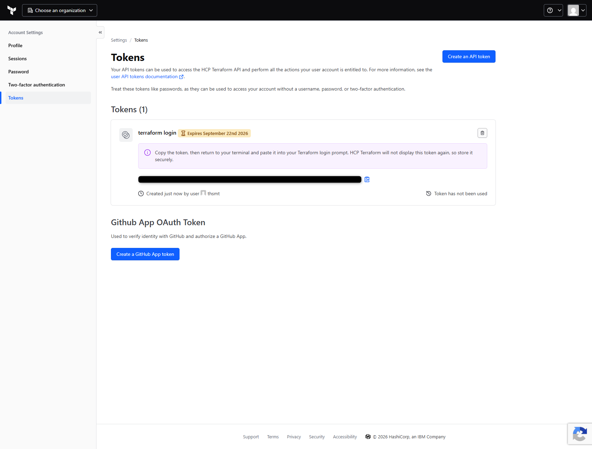
認証情報は通常、実行ユーザーの~/.terraform.d/credentials.tfrc.jsonへ保存される。このファイルをGitへ登録したり、内容をログへ出力したりしない
実行例：terraform loginの成功
$ terraform login
Terraform will request an API token for app.terraform.io using your browser.
Do you want to proceed?
Enter a value: yes
Token for app.terraform.io:
Enter a value: <HCP_USER_TOKEN>
Retrieved token for user <HCP_USER_NAME>
Welcome to HCP Terraform!確認プロンプトにはトークンではなくyesを入力する。トークンはToken for app.terraform.ioの入力欄へ貼り付ける。失敗する場合は、期限切れ、コピー漏れ、別アカウントのトークン、削除済みトークンを確認し、新しいトークンを発行する
cloudブロックの追加
既存のterraformブロックへcloudブロックを追加する。required_providersを別のterraformブロックに重複して定義せず、Root Module内で統合する
terraform {
required_version = ">= 1.5.0"
cloud {
organization = "<HCP_ORGANIZATION_NAME>"
workspaces {
name = "<HCP_WORKSPACE_NAME>"
}
}
required_providers {
aws = {
source = "hashicorp/aws"
version = "~> 6.0"
}
}
}main.tfとterraform.tfの両方にrequired_providersを定義すると、Duplicate required providers configurationになる。ファイルは分けられるが、設定は1つのrequired_providersへ統合する
Workspaceの初期化とState移行
cloudブロックを追加したディレクトリでterraform initを実行する。既存のLocal Stateがある場合は、移行確認の内容とOrganization／Workspaceを確認してからyesを入力する
terraform fmt
terraform init
terraform state list
terraform plan実行例：Local StateをHCP Terraformへ移行
$ terraform init
Initializing HCP Terraform...
Do you wish to proceed?
Enter a value: yes
Initializing provider plugins...
- Reusing previous version of hashicorp/aws from the dependency lock file
- Using previously-installed hashicorp/aws v6.61.0
HCP Terraform has been successfully initialized!State移行後はHCP Terraformが正式な保存先になる。ローカルのterraform.tfstateが空または最小構成になっても、WorkspaceのStatesでState versionと管理リソースを確認できれば異常ではない。移行前に作成されたterraform.tfstate.backupも機密情報として保護する
GitHubリポジトリへTerraform構成を登録
VCS-driven workflowでは、HCP TerraformがGitHubリポジトリからTerraform構成を取得する。Gitの初期化はホームディレクトリではなく、main.tfなどを配置したプロジェクトディレクトリで実行する
- GitHubでTerraform構成専用のリポジトリを作成
- 公開範囲を選択し、Add .gitignoreでTerraformを指定
- プロジェクトディレクトリでGitを初期化し、リモートリポジトリを登録
main.tf、.terraform.lock.hcl、.gitignoreをコミットmainブランチをPushし、GitHub上でファイルを確認
.gitignoreを追加する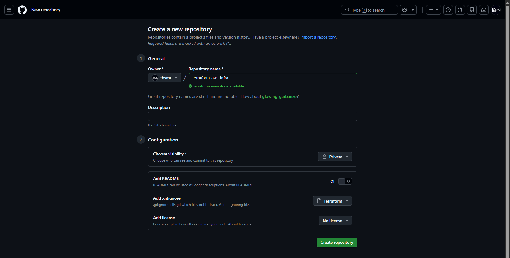
cd ~/aws-infra
git init -b main
git remote add origin https://github.com/<GITHUB_USER>/<REPOSITORY_NAME>.git
git fetch origin
git branch --set-upstream-to=origin/main main
git pull --rebase
terraform fmt
terraform init
terraform validate
git add main.tf .terraform.lock.hcl .gitignore
git commit -m "Update Terraform configuration"
git push/home/ubuntuで実行すると、chapter3やenvtestなどホーム配下全体が1つのリポジトリに含まれる。誤って作成した~/.gitは、必要なファイルを退避して対象を確認したうえで削除し、~/aws-infraで初期化し直す
.terraform.lock.hclはProviderの選択を固定するため登録する。Provider本体を保存する.terraform/、認証情報、terraform.tfstate、Planファイルは登録しない
HTTPS認証でFine-grained PATを使用する場合
GitHubはGit操作でアカウントのパスワードを受け付けない。HTTPSの認証プロンプトでは、UsernameへGitHubユーザー名、PasswordへPersonal Access Tokenを入力する。対象リポジトリを限定し、Repository permissionsのContentsをRead and write、必須のMetadataをRead-onlyにする
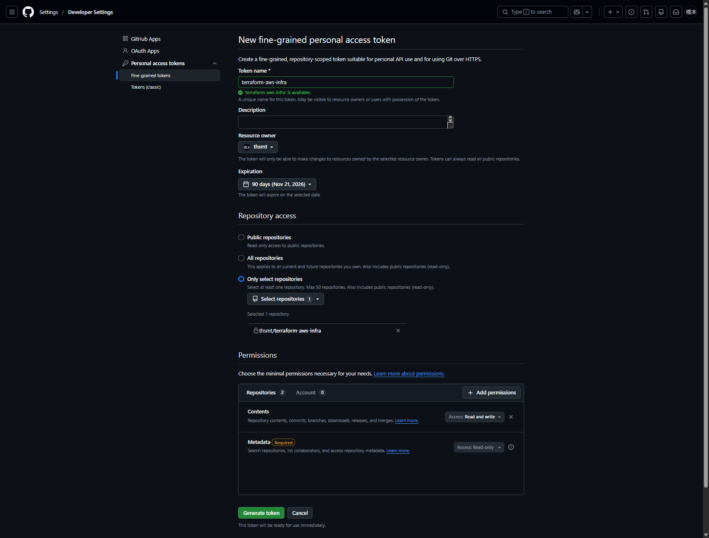
PATのRepository accessに対象リポジトリが含まれていることと、ContentsがRead and writeになっていることを確認する。PATをリモートURL、コマンド、シェル履歴、スクリーンショットへ埋め込まない。表示されたPATは再表示できないため、安全な保管先へ保存し、露出したPATは失効する
新しいディレクトリではterraform initを実行
.terraform.lock.hclをコピーしても、Provider本体を保存する.terraform/providersは自動的にコピーされない。新しい作業ディレクトリでは、Validateより先にInitを実行する
実行例：Providerがローカルキャッシュにない
$ terraform validate
Error: registry.terraform.io/hashicorp/aws: there is no package for
registry.terraform.io/hashicorp/aws 6.61.0 cached in .terraform/providersterraform initでlock fileに記録されたProviderを取得してから、terraform validateを再実行する。Backendやcloud設定の切り替えを明示する必要がある場合はterraform init -reconfigureを使用する
WorkspaceとGitHubをVCS連携
WorkspaceのSettings → Version controlからGitHubを接続する。VCS連携後は対象ブランチへのPushを契機にHCP Terraformが構成を取得し、Remote Runを開始する
- Connect to version controlを選択
- Version control workflowを選択
- ProviderでGitHub.comを選択
- GitHub側でTerraform CloudのOAuth認可を承認
- GitHub Appを対象リポジトリだけへインストール
- 対象リポジトリとブランチを選択
- Working directory、Auto-apply、VCS triggerを確認して保存
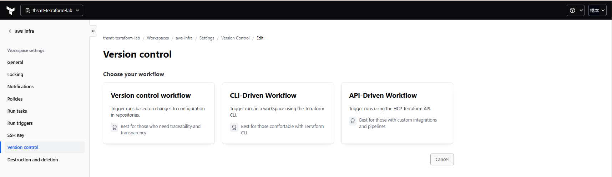
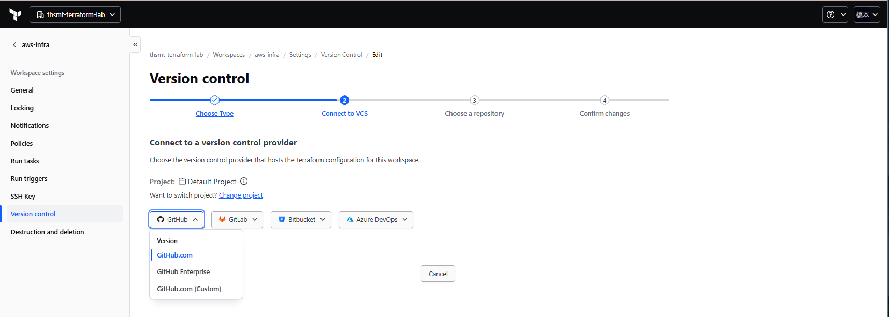
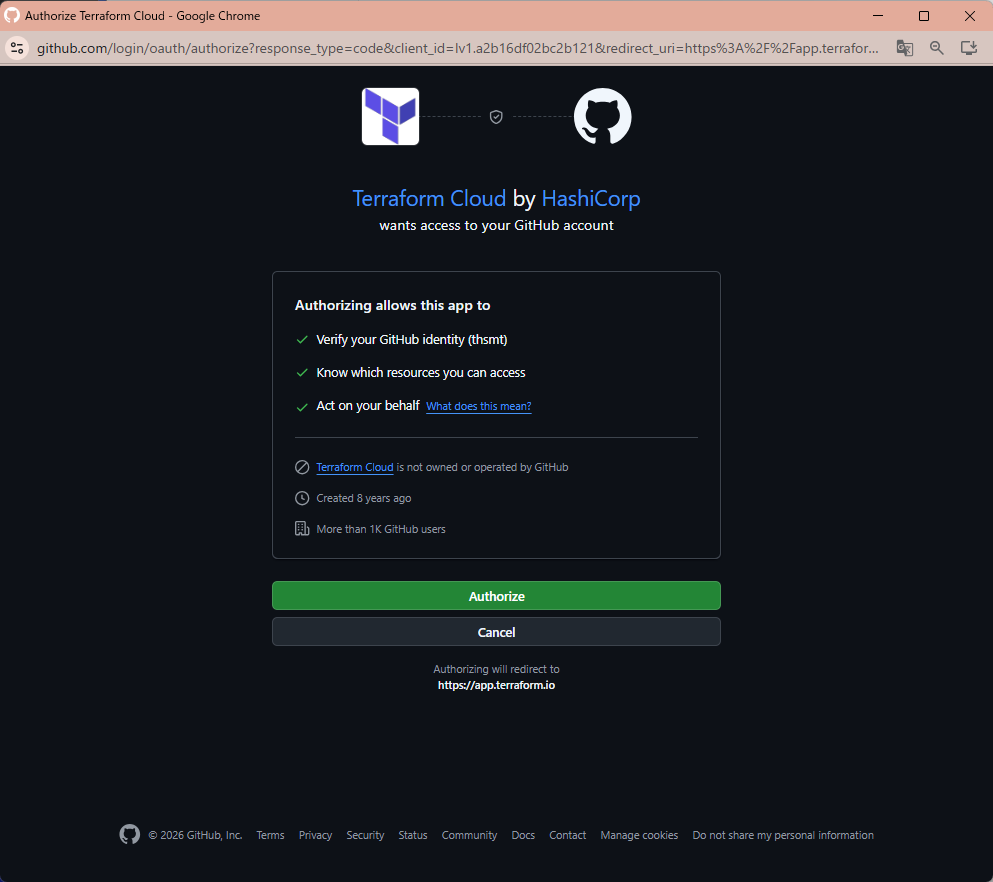
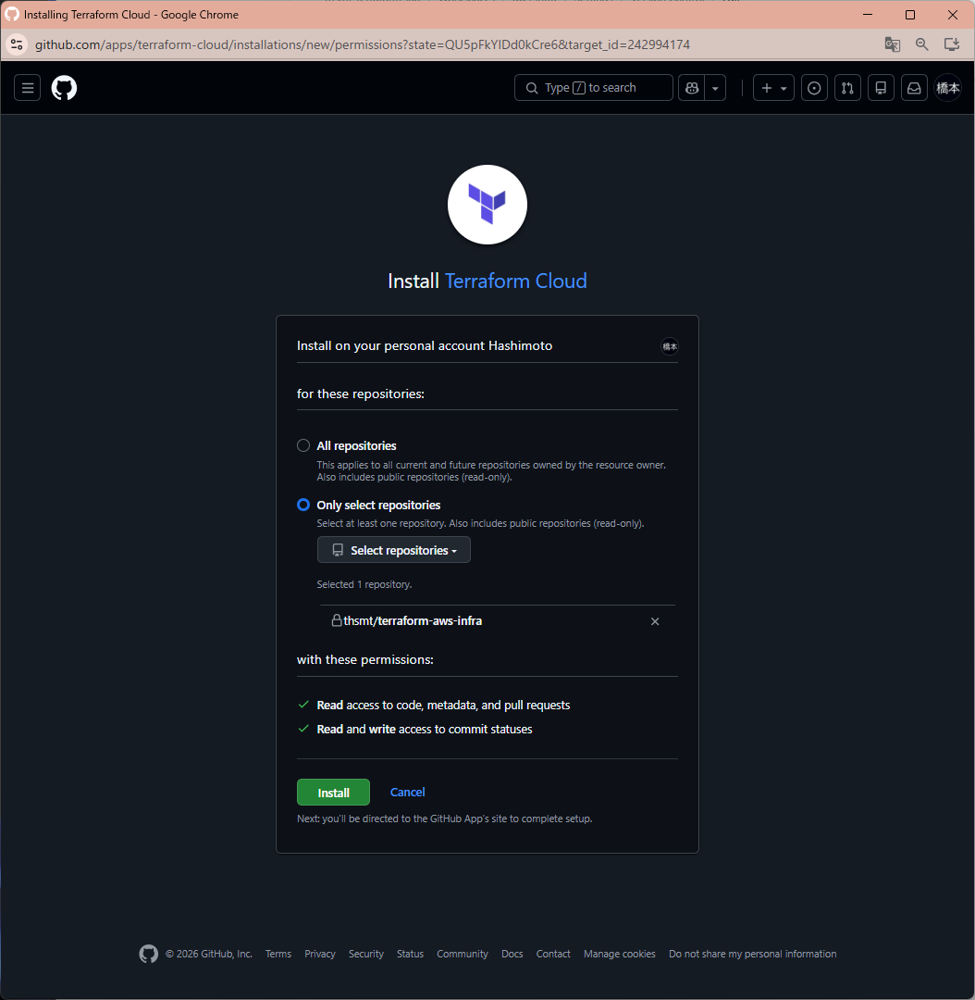
Please disable pop-up blocker and try againと表示された場合は、app.terraform.ioから開かれるGitHubのポップアップをブラウザーで許可してから接続をやり直す。認可後にHCP Terraformへ戻らない場合は、ブロックされたウィンドウがないか確認する
| 設定 | 今回の指定 | 判断基準 |
|---|---|---|
| Terraform working directory | 空欄 | Root Moduleがリポジトリ直下にあるため。サブディレクトリに置く場合は相対パスを指定 |
| Auto-apply | 無効 | Planを確認し、手動承認後にApplyする |
| VCS trigger type | Branch-based | 通常のブランチ更新でRunを開始する |
| VCS branch | Default branch | GitHubの既定ブランチであるmainを使用する |
| Automatic run triggering | Root Moduleが直下ならAlways trigger runs | Monorepoで対象パスを限定する場合だけPatternsまたはPrefixesを使用 |
| Automatic speculative plans | 有効 | Pull Requestの変更をApplyせずにPlanで確認する |
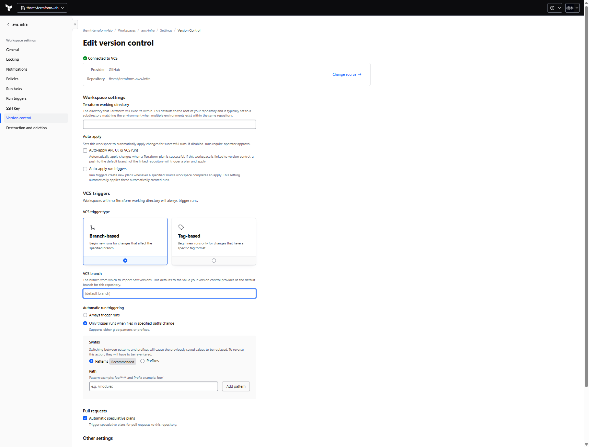
実行モードの選択
WorkspaceのSettings → General → Execution modeで、PlanとApplyを実行する場所を選択する。実行場所によってAWS認証情報の取得元が変わる
| 実行モード | Plan／Applyの実行場所 | AWS認証情報 | 用途 |
|---|---|---|---|
| Remote | HCP Terraformの実行環境 | Workspace VariablesまたはDynamic Provider Credentials | HCP Terraform上でRun、ログ、承認を一元管理する |
| Local | Terraform CLIを実行したEC2、VM、端末 | ローカル環境変数、AWS Profile、EC2 IAMロールなど | Plan／Applyは手元で実行し、StateのみHCP Terraformで共有する |
| Agent | 自社ネットワーク内のTerraform Agent | Agent実行環境で利用可能な認証方法 | 閉域環境やHCPから直接到達できない対象を操作する |
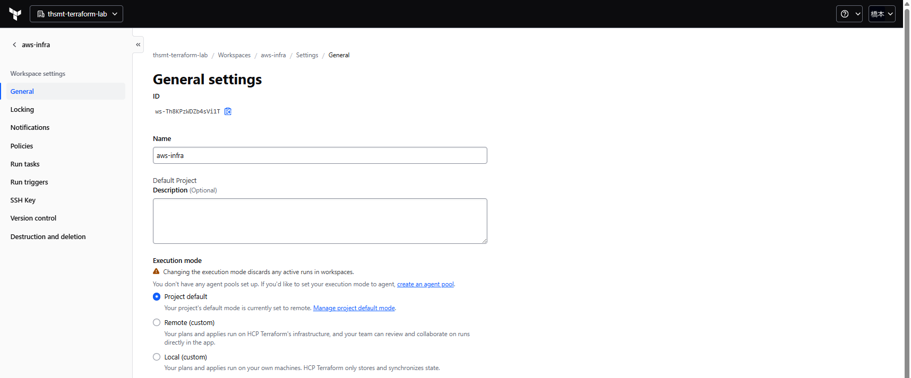
EC2へSSH接続したシェルで設定したexport AWS_ACCESS_KEY_ID=...やEC2 Instance Profileは、HCP TerraformのRemote実行環境へ引き継がれない。Remote実行ではWorkspace側へAWS認証方法を設定する
Remote実行でAWS認証情報を設定
WorkspaceのVariablesでは、Terraform variableとEnvironment variableを用途に応じて選択する。どちらもPlan／Applyへ値を渡す機能だが、値を受け取る場所が異なる
Terraform variableとEnvironment variableの違い
| 種別 | 用途 | Keyの例 | .tf側の定義 |
|---|---|---|---|
| Terraform variable | Terraformコードの入力変数へ値を渡す | aws_region | variable "aws_region"が必要 |
| Environment variable | Terraformを実行する環境へ環境変数を渡す | AWS_ACCESS_KEY_ID | variableブロックは不要 |
Terraform variableのKeyにはvar.を付けず、variableブロックの名前を指定する。通常の文字列はHCLを無効にし、List、Map、Booleanなどを式として入力する場合だけHCLを有効にする。Environment variableではHCLを使用しない
AWS認証情報とリージョンを登録
短期検証で静的なAWSアクセスキーを使用する場合は、Environment variableとして登録する。アクセスキーそのものはValueへ入力し、KeyにはAWS SDKが認識する環境変数名を指定する
| Category | Key | Value | Sensitive |
|---|---|---|---|
| Environment variable | AWS_ACCESS_KEY_ID | <AWS_ACCESS_KEY_ID_VALUE> | 有効 |
| Environment variable | AWS_SECRET_ACCESS_KEY | <AWS_SECRET_ACCESS_KEY_VALUE> | 有効 |
| Environment variable | AWS_SESSION_TOKEN | <AWS_SESSION_TOKEN_VALUE> | 一時認証情報を使用する場合は有効 |
| Environment variable | AWS_REGION | ap-northeast-1 | 無効 |
CategoryをEnvironment variable、KeyをAWS_REGION、Valueをap-northeast-1、Sensitiveを無効にする設定で正しい。Providerブロックにregion = "ap-northeast-1"を直接記述している場合、Workspace側のリージョン設定は重複するため、どちらで管理するかを決めて1か所に揃える
KeyにはAWS_ACCESS_KEY_ID、ValueにはAKIA...などの実際の値を入力する。シークレットアクセスキーも同様にKeyとValueを分け、Sensitiveを有効にする
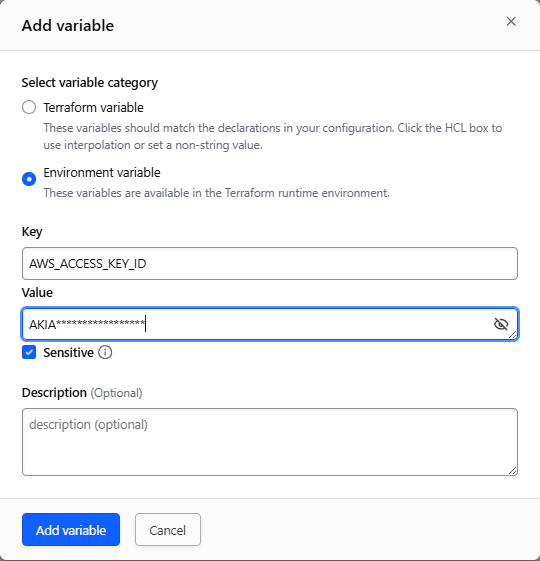
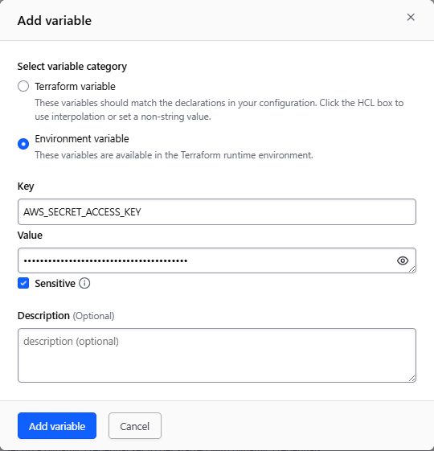
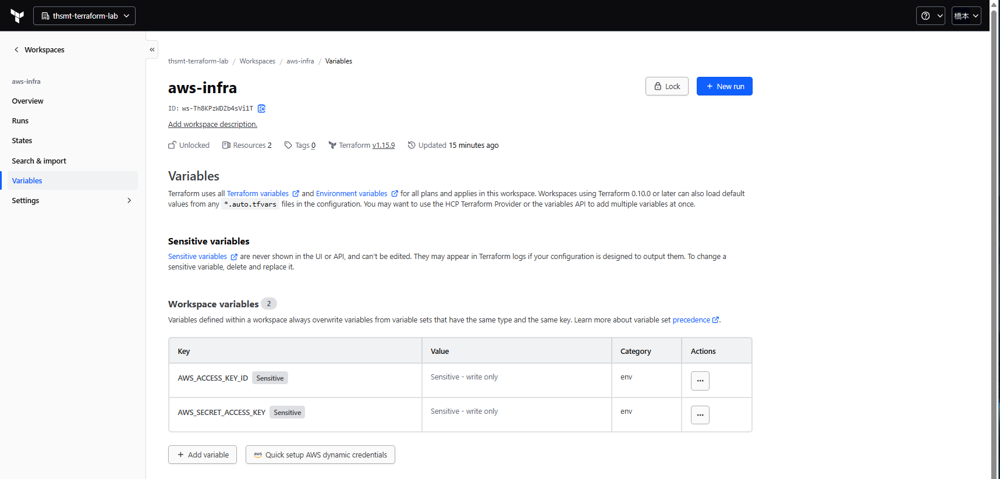
継続運用では、長期アクセスキーをWorkspaceへ保存せず、HCP TerraformのDynamic Provider CredentialsとAWS IAMのOIDC連携を使用する。Workspaceごとに許可するIAMロールを分け、短時間の認証情報をRunごとに発行する構成が適している
実行例：Remote実行でAWS認証情報を取得できない
$ terraform plan
Running plan in HCP Terraform.
Planning failed. Terraform encountered an error while generating this plan.
Error: No valid credential sources found
Error: failed to refresh cached credentials, no EC2 IMDS role foundRemote実行環境にはEC2のInstance Metadata Serviceがないため、Workspace VariablesまたはDynamic Provider Credentialsを設定する。Local実行へ切り替える場合は、実行元でaws sts get-caller-identityを確認する
PushからPlan、Applyまでの流れ
VCS連携後にmainブランチへPushすると、HCP Terraformが対象コミットを取得してPlanを実行する。Auto-applyを無効にした場合は、Planの差分を確認してからConfirm & applyを選択する
- ローカルで
terraform fmtとterraform validateを実行 - 変更をコミットしてGitHubの
mainへPush - HCP TerraformのRun detailsで対象Commit、Branch、Repositoryを確認
- Planの追加・変更・削除件数とリソース単位の差分を確認
- Confirm & applyを選択
- Apply finishedとState versionの作成を確認
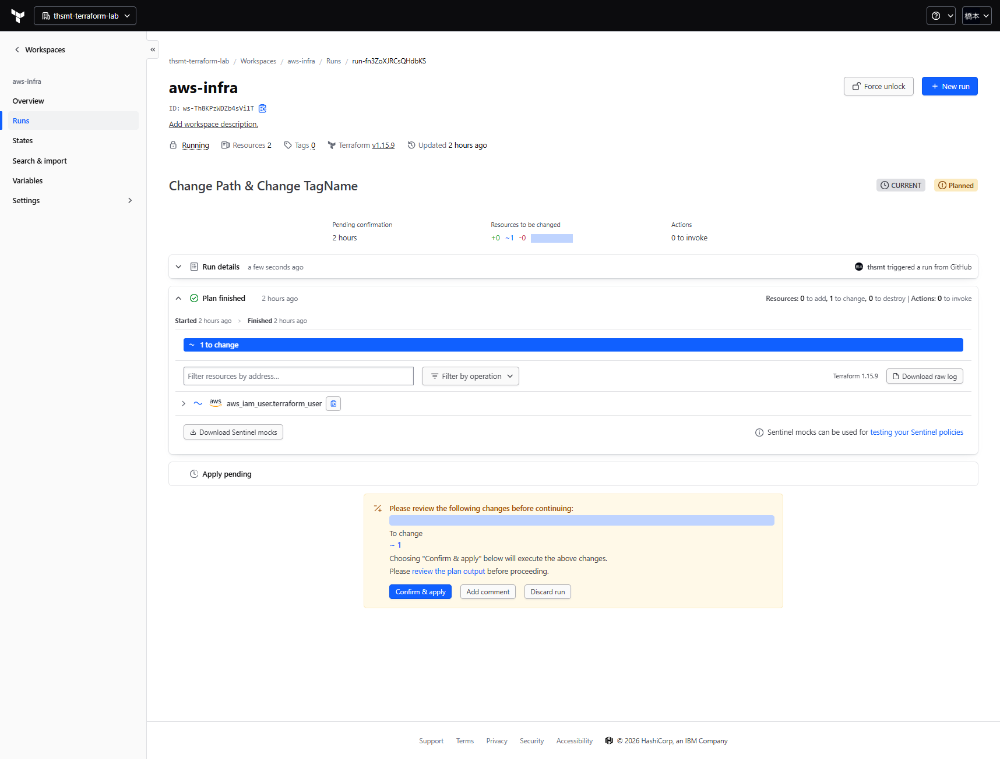
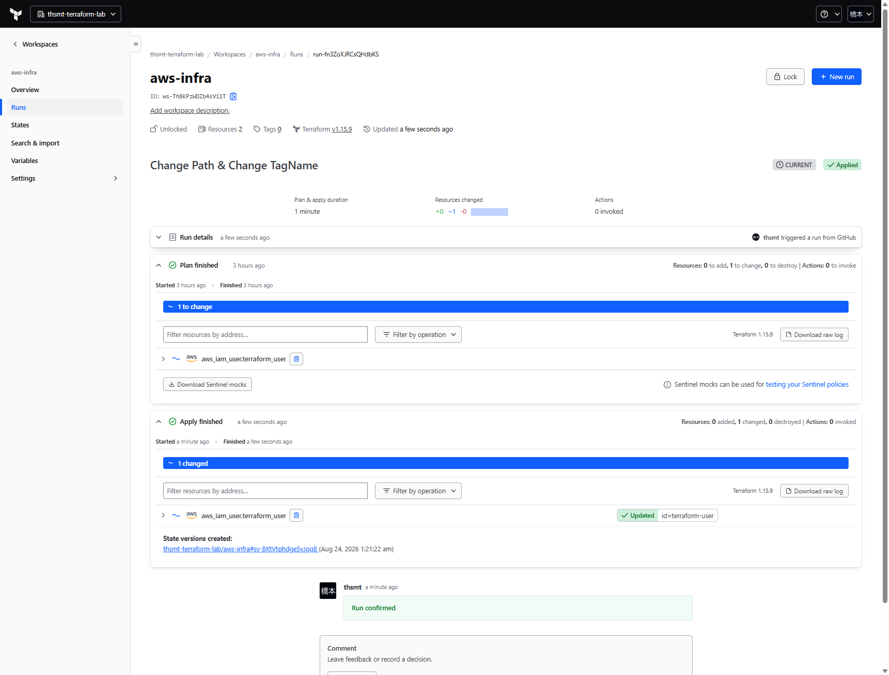
実行対象のCommitが最新かをRun detailsで確認する。ローカルで編集しただけではHCP Terraformへ反映されない。変更をコミットして対象ブランチへPushし、新しいCommit IDを使ったRunが開始されたことを確認する
HCP Terraformで確認する項目
| 画面 | 確認内容 |
|---|---|
| Overview | Workspace名、Terraformバージョン、Execution mode、Resource数、最新更新時刻 |
| Runs | Plan／Applyの結果、実行者、差分、エラー、承認状態 |
| States | State version、管理リソース、Output、更新者、更新日時 |
| Variables | Terraform variableとEnvironment variableの分類、Sensitive設定、Variable Set |
| Settings | Execution mode、Terraform version、Auto apply、VCS連携、Workspace削除設定 |
terraform workspace show
terraform state list
terraform planHCP Terraformのアバター変更
HCP TerraformのユーザーアバターはGravatarから取得される。HCP TerraformのProfileに登録されているメールアドレスと、Gravatarへ登録するメールアドレスを一致させる
- Gravatarのアバター管理画面を表示
- HCP TerraformのProfile画面に表示されているメールアドレスでログインまたは新規登録
- メールアドレスの確認メールを承認
- Gravatar管理画面で対象メールアドレスを選択
- Upload imageから使用するJPEGまたはPNGファイルを選択
- 必要に応じて表示範囲を調整して保存
- アップロードした画像を対象メールアドレスのアクティブなアバターに設定
- RatingはGに設定
- HCP Terraformへ戻ってCtrl + F5で更新
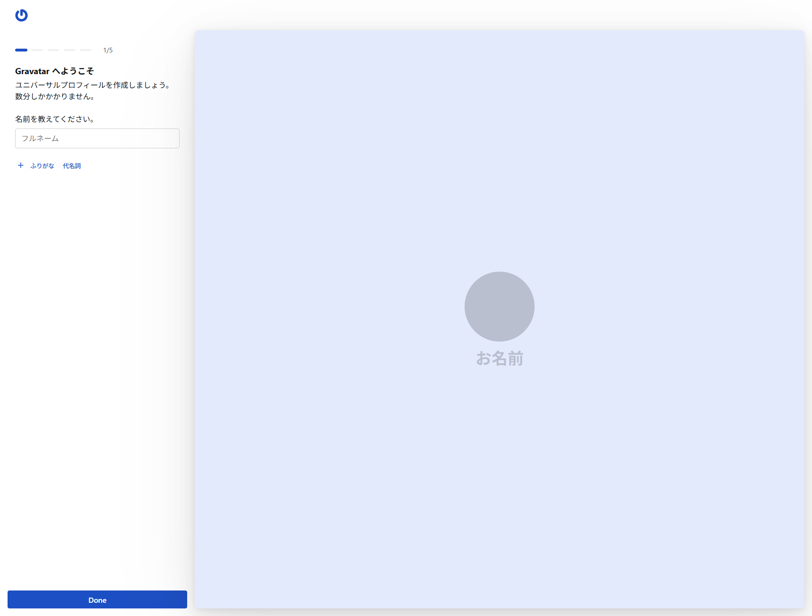
HCP TerraformとGravatarのメールアドレスが完全に一致していること、画像が対象メールアドレスのアクティブなアバターになっていること、RatingがGであることを確認する。反映には少し時間がかかる場合がある